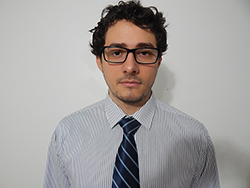

About

My name is Rafael Thofehrn Castro. I live in Curitiba, Brazil and recently graduated in Computer Science at Federal University of Paraná.
In 2012 I had the opportunity to participate on a scholarship program and travel to Vancouver, Canada to attend courses
related to Computer Science at the University of British Columbia. The scholarship lasted eighteen months and at the end I participated on an
internship where I developed an application to help a group of doctorate students with their thesis. The application was used at the conference Siggraph 2013
where their project was presented.
Education
Academic Qualification
-
Universidade Federal do ParanáCuritiba, BrazilComputer Science - Undergraduation2010-2015
-
University of British ColumbiaVancouver, CanadaComputer Science - Sandwich Undergraduation2012-2013
Notable Projects
-
Undergrad Conclusion Project: Multi-technology Database Manipulation ToolAbstract: This work details all the steps involved in the development of a tool that manages different technologies of relational databases. The tool offers features to analyze single databases, such as generation of statistics, and also to manage pairs of databases, such as structure comparison and structure and data migration. The document presents conditions and requirements to be met by the tool and then details the development of each feature, describing conceptual and implementation problems and showing results with a test database. It concludes with experiments using real databases to verify the efficiency of the migration feature.Work Experience
-
Company: Planning Service Transfer PricingCuritiba, BrazilDeveloperFebruary 2014 - May 2015Responsible for the development of Desktop and Web applications in C# to support the company main activities.Research PlacementVancouver, CanadaCollaboratorMay 2013 - August 2013Responsible for the development of a Desktop in C# to integrate all components of the project "Low Budget Transient Imaging Using Phonotic Mixer Devices". The application initiates image capturing with a special camera, process the received data and present the results. The project was presented at the conference Siggraph 2013 in Anaheim, California, United States of America.Programa de Educação TutorialCuritiba, BrazilCollaboratorMarch 2010 - July 2012Development of activities in partnership with the Universidade Federal do Paraná Computer Science Program. Among the program's activities stand out a free Linux course taught by experienced students to new ones.SkillsLanguages
-
Advanced EnglishCertificate in English Language - Advanced LevelEnglish Language Institute - The University of British ColumbiaTechnical Skills
-
Programming Languages:
-
Advanced: C, C++, C# and Javascript
-
Intermediate: Java, Assembly, Shell Script, VHDL, Pascal, Prolog and Haskell
-
Basic: Python
-
-
Computer Skills:
-
Web Development: ASP.NET
-
Desktop Development: Windows Forms and WPF
-
Databases: Oracle, MySQL, PostgreSQL and Firebird
-
Other technologies: Unity
-
Events-
Siggraph 2013Anaheim, Unites States of AmericaCollaboratorJuly 2013Booth: "Low-Budget Transient Imaging Using Photonic Mixer Devices".SIEPE 2011Curitiba, BrazilWork PresentationOctober 2011Project: "Software Gerenciador de Eventos Acadêmicos".SIEPE 2010Curitiba, BrazilWork PresentationOctober 2010Projects: "Um estudo sobre Redes Tolerantes a Atrasos e Desconexões and "Atividades lúdicas como estratégia para Feira de Cursos e Profissões".
-
-